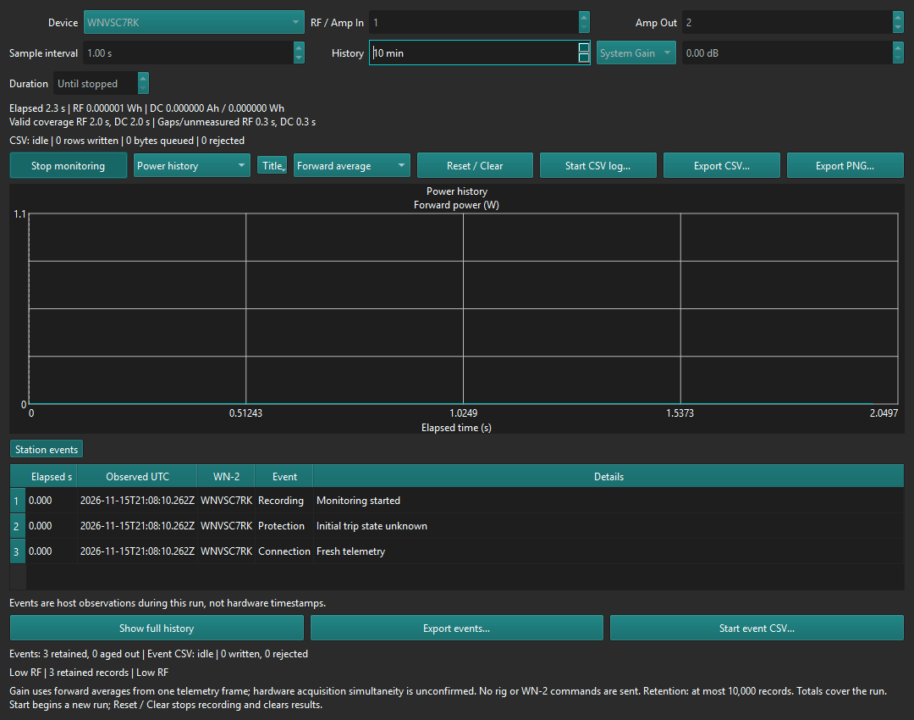

Timed recording, RF/DC energy and charge
On this page
- Set up a recording
- Timed or continuous operation
- Energy and charge
- Reset and changed conditions
- File problems
- Practical long recordings
Set up a recording
Open Tools → RF History and Amplifier Analysis and select the WN-2 and channels. Choose the measurements and recording interval. Decide whether to record for a set duration or continue until you stop it. Click Start CSV log and choose a destination to write a live CSV file. Export CSV saves the readings retained in the window. CSV can be opened in a spreadsheet program. Keep the recording window's status visible during a long run so you notice storage problems.
Timed or continuous operation
Click Start monitoring and check that elapsed time and sample counts increase. A timed run completes when its configured duration ends. Continuous operation continues until you stop it. Stopping retains the results for review and export.

Check elapsed time, data coverage and writer status during a recording. Select image to enlarge.

Energy and charge
RF energy is accumulated in Wh. DC energy is also in Wh, and DC charge is in Ah. These totals depend on valid measurements over time, not just the last displayed value. Only valid intervals are included. Disconnection, stale readings and other gaps reduce coverage; the application does not assume the last power continued throughout a missing interval. Review valid-data coverage and gap information with every total.
Reset and changed conditions
Save useful results before Reset / Clear. Begin a separate record when changing the device, channels or measurement settings that affect interpretation. Do not combine two different station conditions merely because their numeric values look similar.
File problems
A full disk, removed drive or unwritable folder can interrupt recording. Read the error and choose a usable destination. Do not assume a graph still updating means every point is reaching the file. Export retained results where possible and note any gap.
Practical long recordings
Use a reliable local destination, check available space, and prevent unwanted computer sleep. Keep the WN-2 powered. After the run, review coverage and completion status before relying on totals. Station-event entries can help explain missing intervals.
Help home · RF StateSide · RayWn2App operator guide